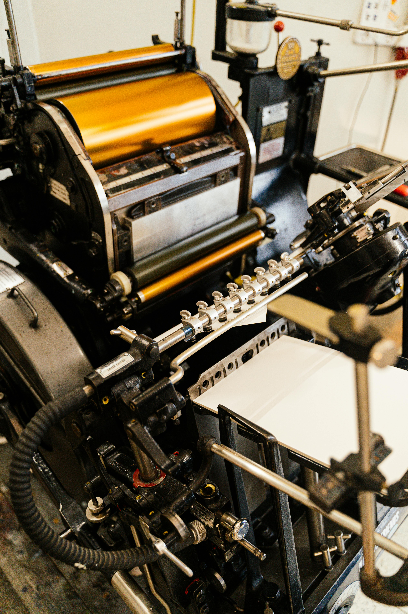

Electric Light Bulb

The invention of the light bulb changed the way people live and work, making nighttime productivity possible.
Internet

The internet transformed communication, access to information, and how we interact with the world.
Smartphone

Smartphones revolutionized communication, entertainment, and daily tasks through mobile technology.
Printing Press
The printing press enabled mass production of books, making knowledge more accessible to the public.